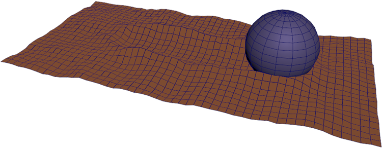

几何体查询用于对几何对象中的数据（例如，网格曲面上顶点颜色的插值）进行采样。查询将返回对象上的位置或组件索引，然后使用这些结果查找一个或多个现有特性的相应值。

高级查询包括两个单独的步骤，可以在图表的不同部分执行：
第一步是在 Geometry::Query 名称空间中使用以下高级查询之一：
第二步是使用查询的输出来访问几何体上一个或多个特性的值。根据查询，它可能会返回位置和/或点索引。
sample_property 节点从网格曲面上或沿股的位置获取数据。请参见对位置的几何特性进行采样。还可以在 Geometry::Query 名称空间中使用基本构建块，创建用于特殊用途的自定义查询。例如，如果要在同一个几何体上查找最近的位置以及半径内的点，或者要在 for_each 或其他类型的循环内查找位置，则这样做会更高效。请参见创建自定义几何体查询。